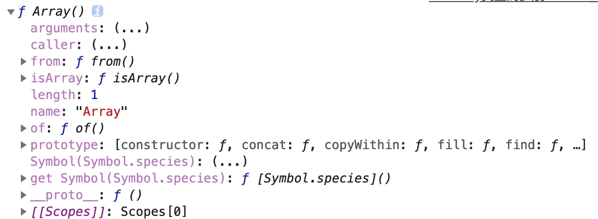
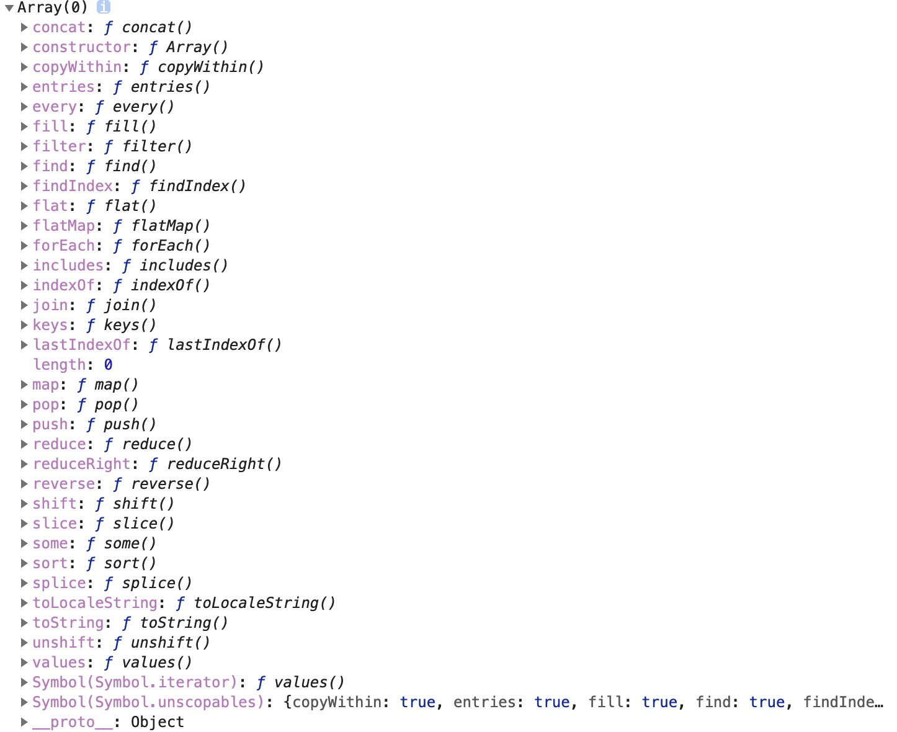

ES6 关于数组的扩展
Array类上的扩展
console.dir(Array);

// Array 类是一个函数 返回一个数组
// Array(x,y,z) 将参数编程一个数组返回
console.log(Array(1, 2, 3)); // [1,2,3]
console.log(Array("1")); // ["1"]
// 注意：只有一个参数，并且参数都是数字n，返回有n个空位的数组
console.log(Array(7));
//Array.of();跟Array一样， 唯一不同的是解决参数是一个数字的时候，返回任然一个只有一项的数组
console.log(Array.of(7)); // [7]
// Array.from(数组/类数组) 返回一个数组，参数是一个数组或者类数组
console.log(Array.from([1, 2, 3])); // [1, 2, 3]
console.log(Array.from("123")); // ["1", "2", "3"]
数组原型上的扩展
// 所有数组实例上的方法的参数是从索引n到m的 都是 [n,m)
console.log(Array.prototype);

// copyWithin 是从原数组中读取内容 替换数组的指定位置的内容
// 参数 copyWithin(替换目标的起始位置，查找的起始位置，查找的结束位置默认到结束位置)
// 如果有超出部分会自动截取
// 修改原数组
let ary1 = [1,2,3,4,5,6,7,8];
console.log(ary1.copyWithin(4, 2, 4)); // [1, 2, 3, 4, 3, 4, 7, 8]
console.log(ary1.copyWithin(3, 2)); // [1, 2, 3, 3, 4, 3, 4, 7]
console.log(ary1); // [1, 2, 3, 3, 4, 3, 4, 7]
// fill 按照指定字符填充数组的指定位置
// 将数组的每一项都编程指定字符
console.log(ary1.fill("martix")); // ["martix", "martix", "martix", "martix", "martix", "martix", "martix", "martix"]
let ary2 = [1,2,3,4,5,6,7,8];
// 将数组的索引的 3，4位置替换成“martix”
console.log(ary2.fill("martix", 3, 5)); // [1, 2, 3, "martix", "martix", 6, 7, 8]
console.log(ary2); // [1, 2, 3, "martix", "martix", 6, 7, 8]
// includes 判断数组中有没有某一项
// 第一个参数，查找对象
// 第二个参数，查找的起始位置
console.log([1, 2, 3].includes(1,1)); // false
// 遍历数组的方法，参数都是一个函数，这个函数中的this是widow,我们可以通过第二个参数函数中的this （reduce 的第二个参数不是）
// filter 过滤数组 根据返回值去过滤原数组
// 返回一个新的数组，原数组不变
let ary3 = ["martix", "martix", 1,2,3 ,"martix", "martix"];
let arr = ary3.filter(function (item, index) {
// 如果返回true 就留下当前项，
// 返回false 就不留下当前项
return typeof item==='number';
});
console.log(arr); // [1, 2, 3]
// find 先遍历数组，一单参数函数返回true 停止查找，返回当前项
// 只会查找一个
let a = ary3.find(function (item) {
return typeof item==="number";
});
console.log(a); // 1
// findIndex 先遍历数组，一单参数函数返回true 停止查找，返回当前项的索引
// 只会查找一个
let i = ary3.findIndex(function (item) {
return typeof item==="string";
});
console.log(i); // 0
// every 遍历数组，如果每一项都返回ture，最后结果为ture，只要有一个为false 结果就是false
console.log([1, 2, 3, 4, 5, 6].every(function (item) {
return typeof item === "number";
})); // true
console.log([1, 2, 3, 4, "matrix", 6].every(function (item) {
return typeof item === "number";
})); // false
// some 遍历数组 只要有一项是true ，最后记过就是true
console.log([1, 2, 3, 4, "matrix", 6].some(function (item) {
return typeof item === "string";
})); // true
// reduce 迭代
// 第一个参数 是参数函数
// 第二个值作为初始prev的值
let ary4 = [1,2,3,4,5];
console.log(ary4.reduce(function (prev, item) {
// prev 上一次的返回值 item：当前项
// console.log(prev);
return prev + item
})); // 15
// reduceRight 跟reduce 一样 只是顺序从右开始
// keys遍历，每一项索引的接口 使用for of 遍历
let ary5 = [1,2,3,4];
console.log(ary5.keys()); // Array Iterator {}
for (let key of ary5.keys()){
console.log(key); // 0 1 2 3
}
// 默认使用for of 遍历数组，默认遍历的就是每一项
for(let item of ary5)
console.log(item);
// entries 遍历接口 可以遍历到索引和每一项 ,每一项遍历都得到一个数组，[索引,当前项]
for (let e of ary5.entries()){
console.log(e); // [0, 1] [1, 2] [2, 3] [3, 4]
}
// 可以解构一下
for (let [index,item] of ary5.entries()) {
console.log(index);
console.log(item);
}
数组的空位
// 数组的空位，数组的某个索引位置没有任何值 undefined不是空位
// 判断一个数组的位置是不是空位 in
// in 判断数组索引位置上有没有值
let arr=[,,,,,]; // 五个空位的数组
console.log(arr);
console.log(arr.length); // 5
console.log(1 in arr); // false
// ES5中的数组对空位的处理不一致，一般直接跳过空位
// ES6中将空位处理成undefined
let arr1 = [1,2,,,,3];
// ES5中的filter
arr1.filter(function (item) {
console.log(item);
});
// ES6中的find
arr1.find(function (item) {
console.log(item);
});
// ES6
for (let item of arr1){
console.log(item);
}
// ES5
for (let key in arr1){
console.log(key);
}
// 面试题 得到一个有7个1的数组
console.log(Array(7).fill(1));